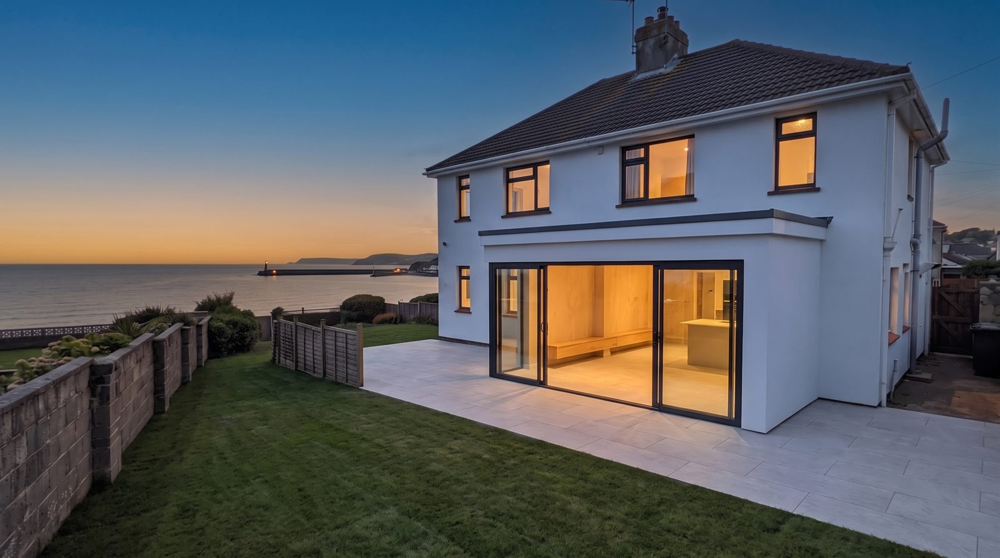
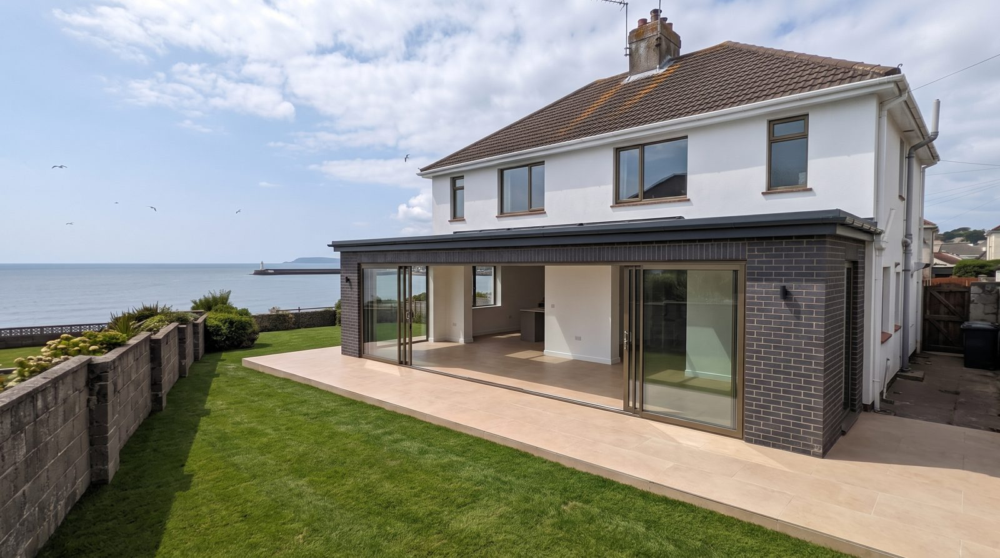
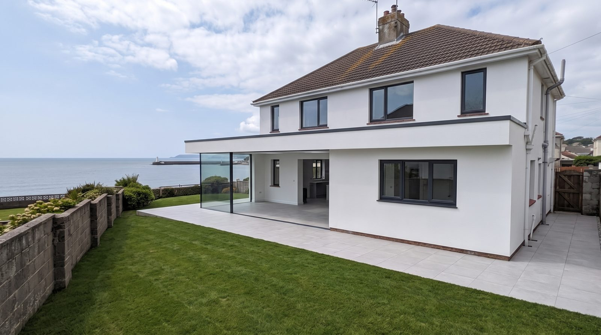

What do you think?
See for yourselfA Karl Gardner extension is never the cheapest way to add a room. It is the best one. Every build is priced honestly, finished completely, and made to outlast the mortgage.

Crisp white render, three anthracite-framed sliding panels, and one porcelain floor running from kitchen to patio.
From £85,000complete, no surprises
Discover
Charcoal brick laid on steel, bronze-anodised frames, and warm sand porcelain flowing out to meet the lawn.
From £115,000complete, no surprises
Discover
Two walls of frameless structural glass meeting at an open corner, no post, nothing between the kitchen and the sea.
Price on applicationone built per year
DiscoverKarl comes to your house and walks it with you. An hour of straight talk about what your home could be — no salesman, no pressure. It is always Karl.
Before a brick is laid, you watch your own house transform — your walls, your garden, your view, rebuilt on film. You approve what you have already seen finished.
One commission at a time. Dates honoured, Karl on site every day, the job wrapped tight and tidy. Your neighbours will watch it happen.
Scaffolding down, floors polished, glass gleaming, keys back in your hand. Moved-in ready, to the day.
By appointment · Twelve commissions a year ·
Book a consultationEvery price is the finished price — design, structure, glazing, floors, decoration. Everything left moved-in ready.
“I’ve worked with Karl on multiple projects and he has been consistently fantastic… the work is done to a high standard, and the results always speak for themselves.”
— Jason Smith, architect · Facebook review
Every commission carries Karl’s ten-year structural guarantee, on paper, signed. And his number stays the same after the invoice.
An hour at your house with Karl. No salesman, no obligation — and no one else. Karl replies personally, usually the same evening.